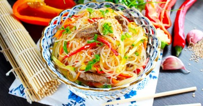

Фунчоза с говядиной и овощами

Ингредиенты
- Говядина - 300 гр
- Фунчоза - 200 гр
- Лук - 1 шт
- Морковь - 1 шт.
- Болгарский перец - 1 шт.
- Огурцы - 1 шт.
- Чеснок - 3 зубч.
- Соевый соус - 4 стол.л.
- Растительное масло - 40 мл.
- Соль - по вкусу
- Кунжут - 1 чайн.л.
- Зелень - по вкусу
Рецепт приготовления
- Как сделать фунчозу с овощами? Подготовьте все указанные продукты. Мясо можно использовать любое: свинину, курицу или говядину. В этот раз мы будем готовить салат с говядиной. Выберите мякоть без прожилок и плёнок. Набор овощей возьмите по своим вкусовым предпочтениям. Для яркости салата я использовала болгарские перцы разных цветов.
- Говядину ополосните и обсушите салфетками. Нарежьте мякоть тонкими небольшими полосками. Если имеются прожилки, то удалите их. Залейте мясо соевым соусом и оставьте мариноваться на 30-40 минут при комнатной температуре.
- В это время займитесь овощами. Лук, морковку и чеснок очистите. Болгарские перцы разрежьте пополам и удалите сердцевину с семенами. Все овощи помойте и обсушите. Если у огурца горькая кожура, то её лучше срезать.
- Чеснок нарубите мелко, при желании пропустите его через чеснокодавилку. Лук нарежьте тонкими полукольцами, болгарский перец тонкими перьями, огурец тонкой соломкой, а морковку натрите на тёрке для корейских салатов.
- В сковороде разогрейте немного растительного масла. Отправьте говядину обжариваться. Помешивая, готовьте до испарения жидкости, затем пламя убавьте и оставьте в сковороде до готовности. Не забывайте периодически перемешивать, чтобы ничего не пригорело. При необходимости воспользуйтесь крышкой для сковороды. Готовое мясо выньте в отдельную тарелку. Как выбрать сковороду и масло читайте в статьях в конце рецепта
- В ту же сковороду отправьте лук и чеснок. Если нужно, то влейте ещё небольшое количество масла. Обжаривайте на сильном огне несколько секунд.
- Добавьте морковку. Не переставая помешивать, обжаривайте до желаемой степени готовности.
- В отдельной сковороде разогрейте 1 ст.л. растительного масла. Обжарьте болгарский перец от нескольких секунд до 1-2 минут.
- Стеклянную лапшу отварите согласно инструкции на упаковке (обычно не более 5 минут). Откиньте фунчозу на дуршлаг и дождитесь когда она остынет. О тон4остях выбора и приготовления разных видов макаронных изделий читайте в отдельной статье в конце этого рецепта.
- Выложите лапшу в глубокую чашу. Добавьте туда же говядину и обжаренные лук с морковкой.
- Следом добавьте болгарский перец и огурец.
- Всё тщательно перемешайте и попробуйте на соль. Досолите по вкусу.
- Готовое блюдо посыпьте кунжутными семечками и украсьте свежей зеленью. Идеально для фунчозы с овощами и мясом подходят зелёный лук и петрушка.
Вернуться к списку блюд